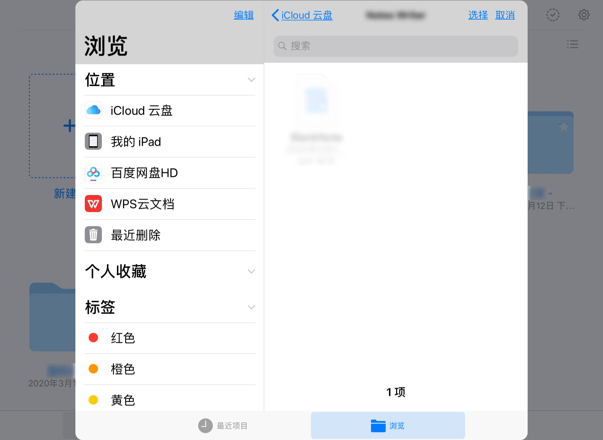
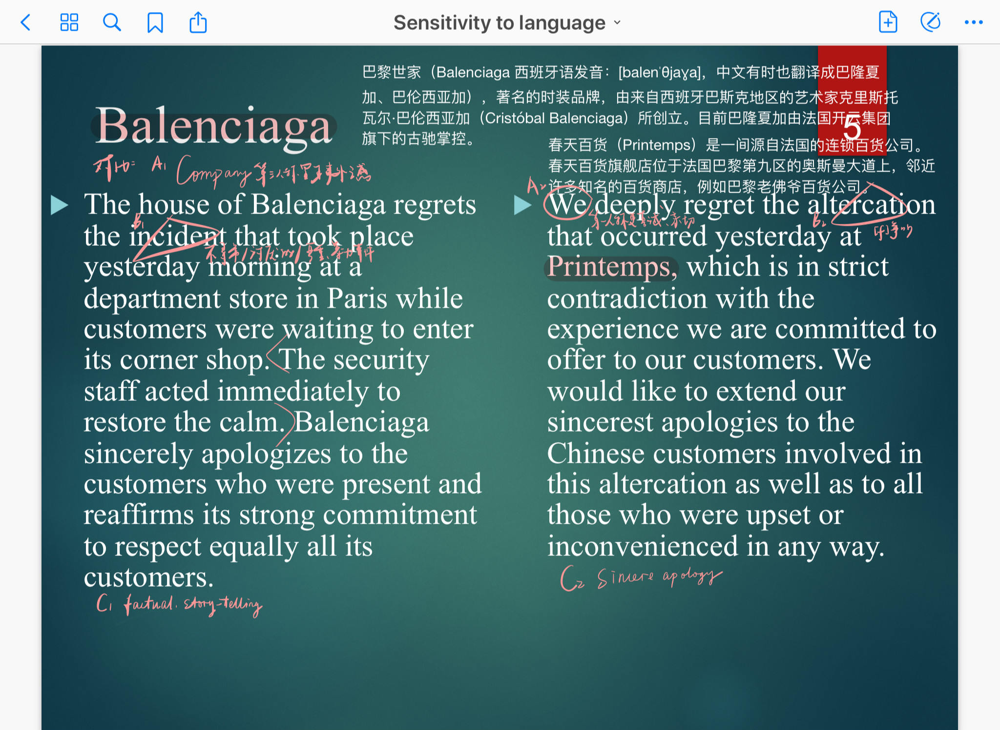
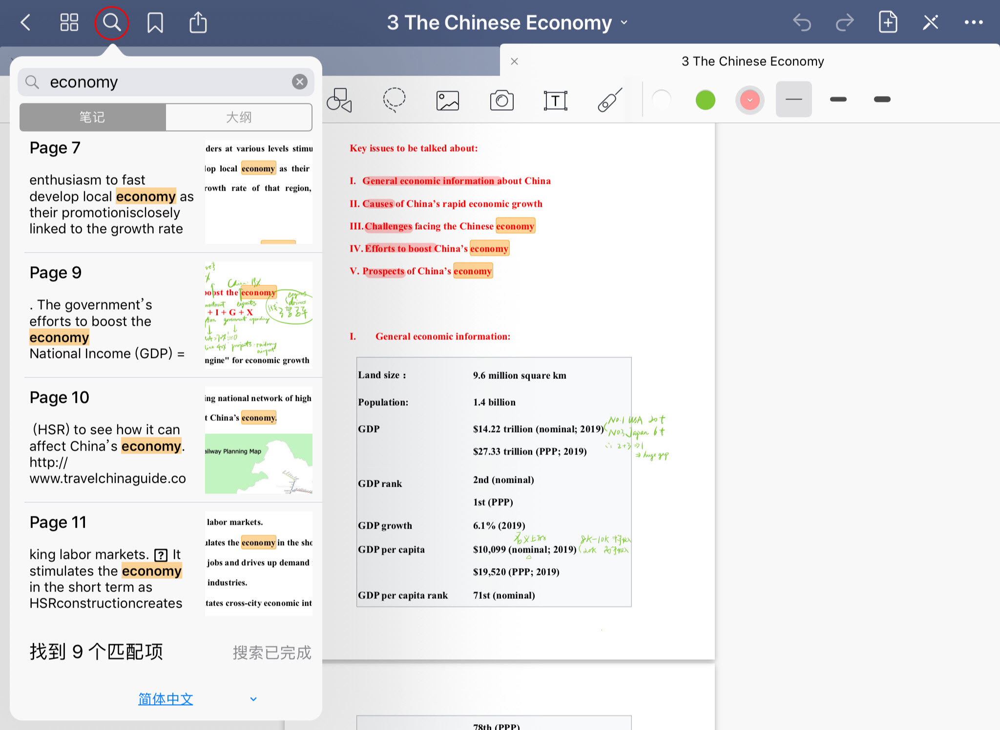
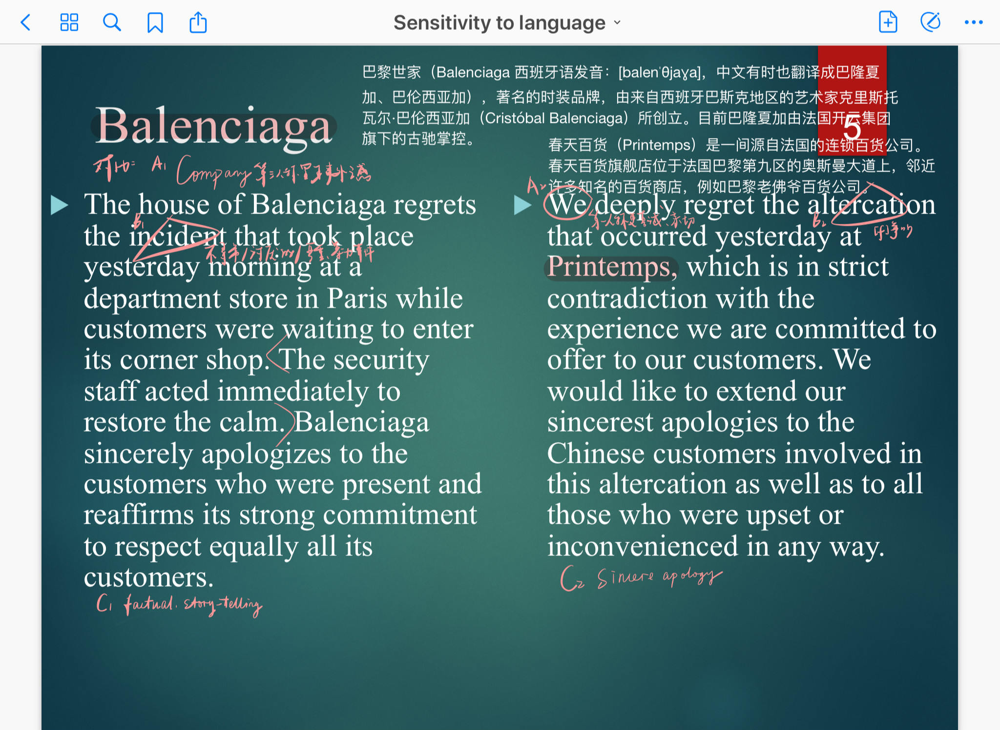
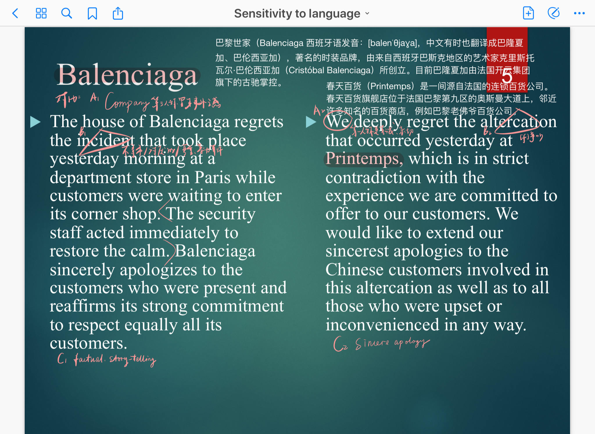

--
Leave Paper Behind ----------------------------------
梦开始的地方
是啥子
好在哪儿
大佬作品
咋个用
文稿
笔记本
文件
图像
搜索
收藏夹
恭喜你坚持看到了教学页面！
这里共有三个板块：文稿，搜索，收藏夹
（可在导航栏自行选择需要查看的内容 or 直接往下看）
--Instructions - 1·文稿
主界面
中心是导入的文件和创建的文件夹
文件/文件夹可通过修改日期/名称排序
点击笔记/文件/文件夹右上角小星星
可以添加到收藏夹
点击右上角图标可以改变查看模式：
图标/列表
点击右上角图标可对笔记/文件/文件夹
整体编辑：导出/复制/移动/废纸篓
点击右上角图标弹出下拉菜单
我们看一下前三个就好：
No.1 笔记本模板
预先按你的喜好规定笔记本样式
包括：纸张大小/颜色/样式/方向，封面样式
你可以使用GN自带的样式
或自己下载其他样式导入
以后创建笔记本默认使用模板
也可以根据需要进行修改
No.2 设置
根据需要可以进行相应调整
No.3 废纸篓
不需要的笔记/文件/文件夹
都可以丢到废纸篓里
类似电脑的回收站
默认不会清空
如错删可以恢复
如确实不需要可以清倒释放内存
最后看一下主界面最重要的一part
点击加号所在区域弹出下拉菜单
可以新建：笔记本/文件夹
可导入图像或拍照新建图像
轻点两下加号所在区域可创建QuickNote
用于紧急情况争分夺秒

点击「导入」：
iPad上的文件
iCloud云盘
WPS云文档
（电脑若为Windows系统可实现联动 传输超方便！）
通用的百度网盘
都可直接导入，舒坦!
--Instructions - 1·1 笔记本
新建笔记本：
从主页面新建
使用默认模板或根据需要调整样式
再起个标题
即可开始玩耍~
这就是笔记本主界面啦
点击右三图标
弹出下拉菜单
可插入新页面
（完美解决纸笔记写满了没地方补充的问题）
也可导入其他文件
（可将各个文件中所有需要的信息整合到一个文件里）
点击右一图标
弹出下拉菜单
可进行一些操作和设置
点击右二图标可进入编辑页面
此时第一行工具栏变为蓝色
若再点一次该图标则文档不可编辑，用于单纯查看
下面看一看第二行工具栏
左一图标：放大镜
可放大页面任意位置
在下面的详情框内查看
详情框内可写写画画/擦除笔迹etc.
（完美解决行间距小的文档不好写字的问题）
当然你也可以双指放大/缩小页面~
左二图标：画笔
下拉菜单可选钢笔/圆珠笔/画笔
（本人写字习惯用画笔，瞅着得劲儿）
工具栏右侧可选颜色/笔迹粗细（都可自定义）
左三图标：橡皮
工具栏右侧可选择大小
下拉菜单有满足强迫症需求的各种选项
左四图标：荧光笔
工具栏右侧可选择颜色/笔迹粗细（都可自定义）
下拉菜单有满足强迫症需求的画直线！
左五图标：形状工具
工具栏右侧可选择颜色/笔迹粗细（都可自定义）
下拉菜单选择笔迹样式/设置是否填充or对齐
PS:直接画一道就是直线！
右五图标：套索工具
说人话就是抠图
下拉菜单可选择要选用的形式
选中一个区域可随意拖动
在选区上单击可进一步操作
右三、四图标：添加图片
区别就是右三得现照，右四是照好的
工具栏右侧可选最近的图片
下拉菜单可进一步从相册里选择
右二图标：文本工具
工具栏右侧可选简单样式
最右侧图标选详细样式
右一图标：激光笔
投屏演示可用
工具栏右侧可选点/线样式
了解完工具栏第二行我们回到第一行左侧~
左一图标：返回（没啥说的吧）
左二图标：进入整个文档缩略视图
可整体编辑/个别调整
同时也可查看本文档的收藏夹/大纲
左三左四待会儿说
左五图标：共享
可导出：本页/全部，可选导出格式并设置细节
可连接打印机打印
可投屏：选择需要的模式
--Instructions - 1·2 文件
直接导入需要的文件
支持doc/ppt/pdf
写写画画圈圈点点~随心所欲

--Instructions - 1·3 图像
直接导入需要的图像/现照
涂鸦/加注释/做plog~随心所欲
--Instructions - 2· 搜索

两种搜索方式：
No.1 文档内搜索
点击工具栏第一行左三图标
输入需要搜索的关键字即可
No.2 在搜索界面对所有文件搜索
在最上方搜索栏中输入需要搜索的关键字即可
--Instructions - 3· 收藏夹
两种方式加入收藏夹：
No.1 文稿主界面添加
点击星星，收藏笔记本/文件/文件夹
No.2 文件内添加
点击工具栏第一行左四图标，收藏当前页
在收藏夹界面可查看
呐
就是这样
不知有没有打动你嘞(ﾟ- ﾟ)?
（进来剁手：
感谢你看到这里呀！
欢迎找我耍：
完结撒花~
 Leave Paper Behind ----------------------------------Leave Paper Behind ----------------------------------
Leave Paper Behind ----------------------------------Leave Paper Behind ----------------------------------


 
